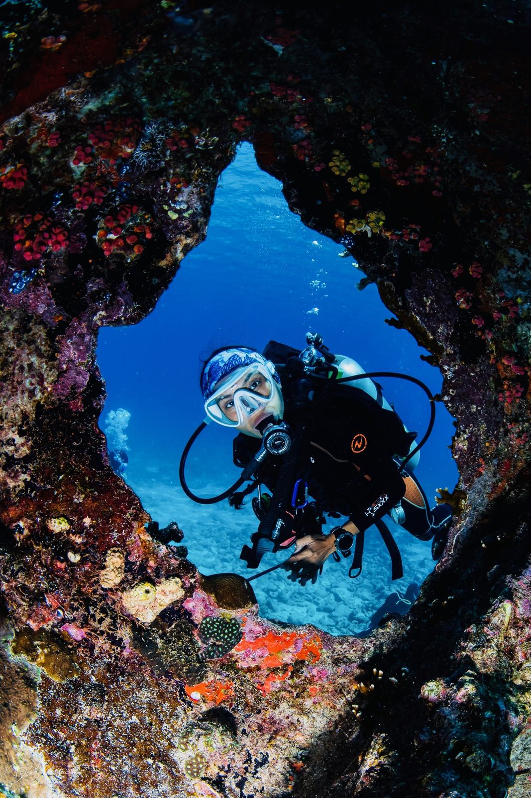
Dive center · Catangnan, General Luna, Siargao
Dive Siargao with the people who look after it.
Anchor-free boats, groups of five or fewer, and every level from your first breath to Blue Cathedral.
Pick your way into the water

I've never dived
Open Water, or try one morning first.
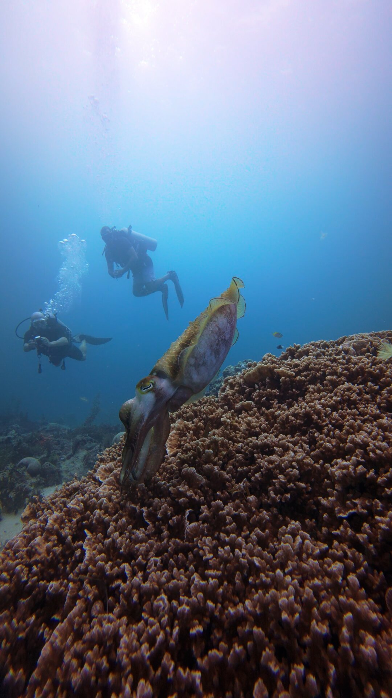
I'm a certified diver
Daily fun dives on nine sites.
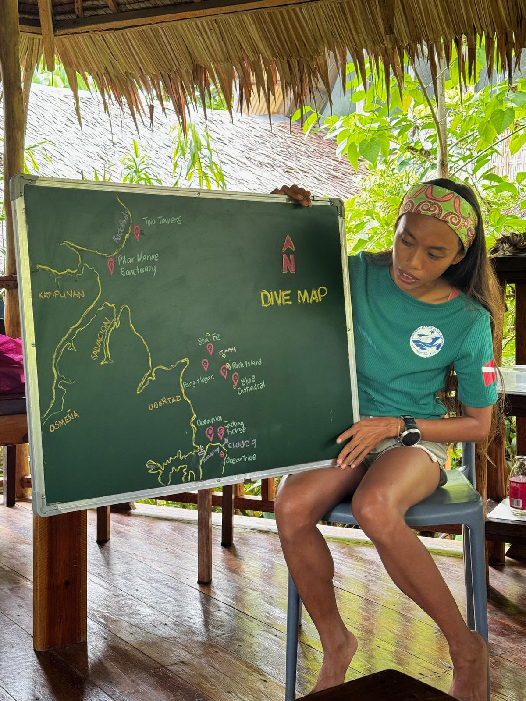
I want to go further
Advanced, Rescue, all the way to Divemaster.
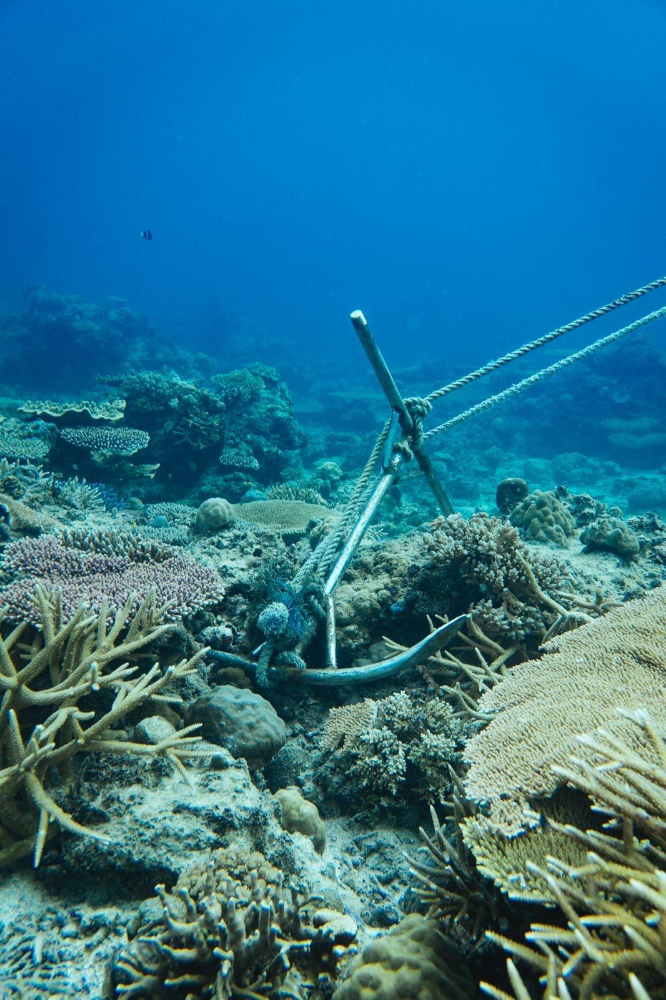
No anchors on the reef.
Every anchor breaks coral that took decades to grow. We tie up to mooring lines we install ourselves.
How we look after the reefWhat divers say
“OCEAN Tribe is not just a regular dive center. They are committed to taking care of the ocean. […] Thank you for helping me overcome my fear of deep waters.”
“Everything was perfectly organized, super professional, and very relaxed at the same time. The equipment was in great condition and the whole team was incredibly friendly.”
“Not only did I have so much fun, but I also got to help install a mooring line which would allow boats to moor instead of drop anchor.”
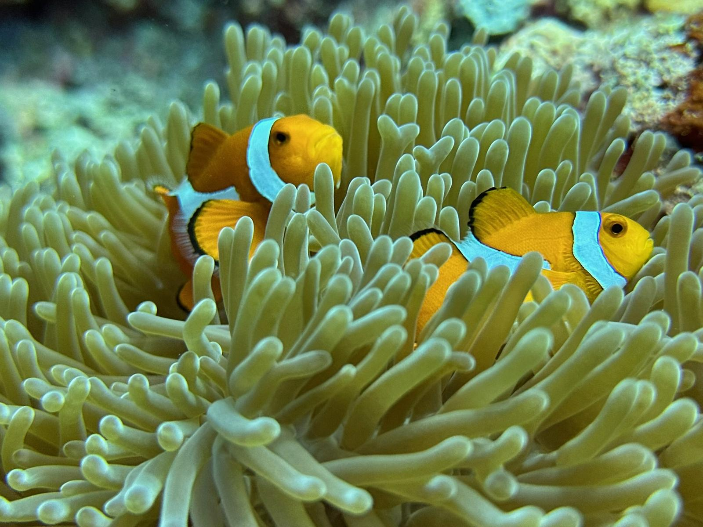
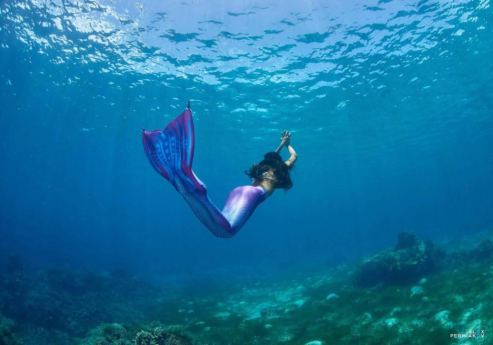
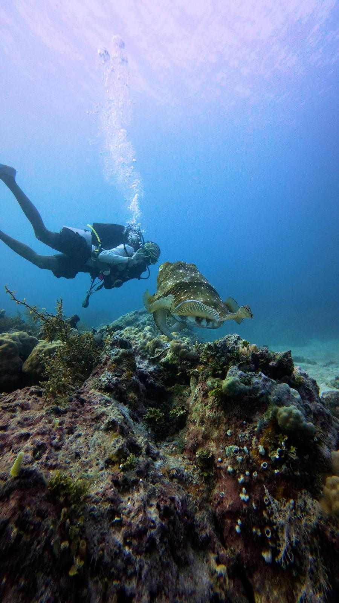
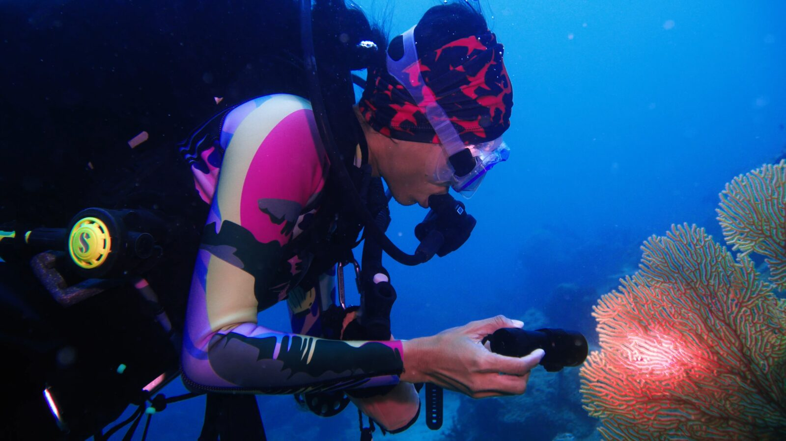
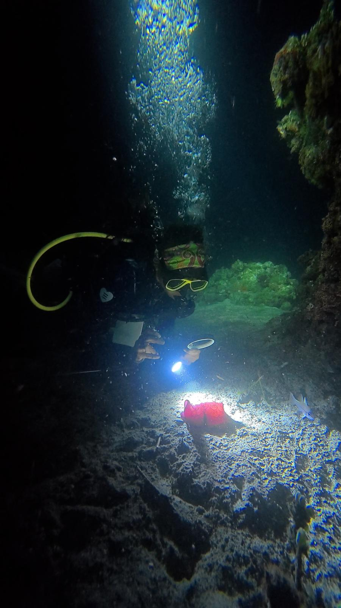
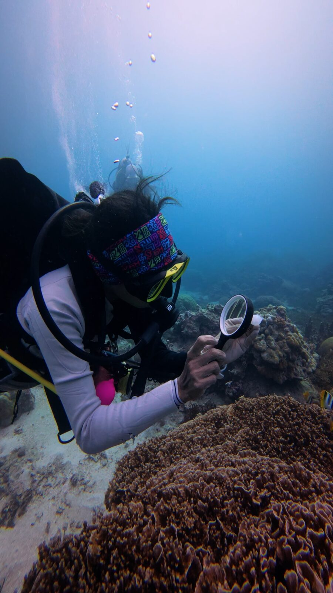
More from under the water, almost every day.
@oceantribe_ph on InstagramThe people on your boat
A local, women-led dive center.
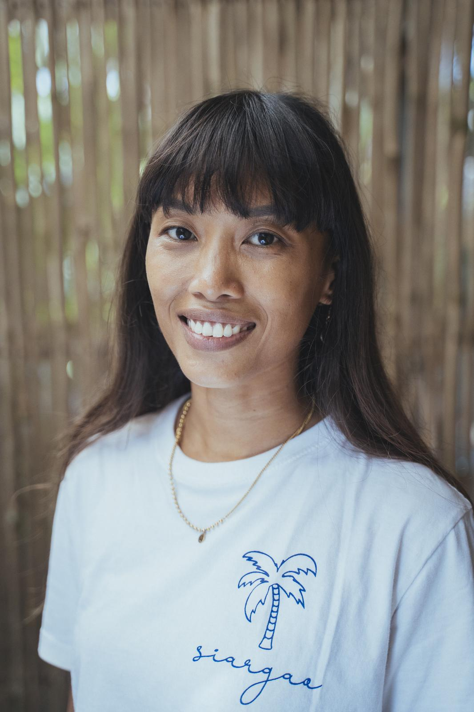
Owner · Instructor
Chie
Started OceanTribe in Siargao and still leads dives most days.
Operations
Ezil
Welcoming, friendly and always happy to help. Your first hello at the front desk.
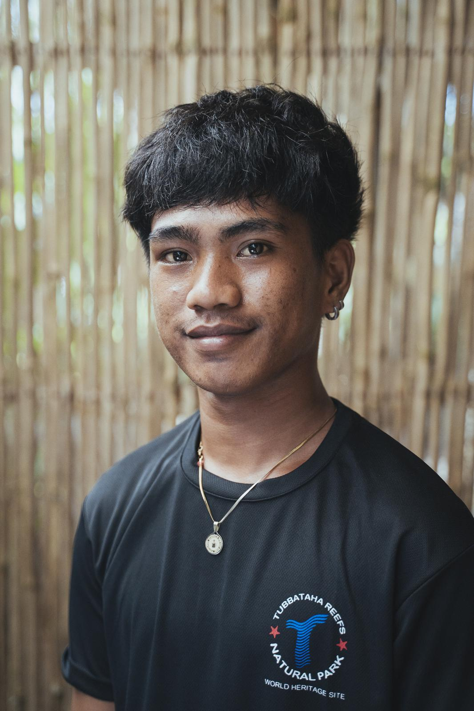
Head of dive logistics
Kin
Our OceanTribe scholar. Went from non-diver to diver and is on his way to Divemaster.
Maintenance
Ate Cecile
Keeps the place running before anyone asks. The caring auntie of the dive center.
How to book
Message us, fill in one form, send a deposit. About ten minutes. Tell us on WhatsApp what you'd like to do and when. We reply fast and confirm the plan with you. Then:
-
Fill in the registration form
Your details, dive experience, a short medical questionnaire and the waiver. Every diver and snorkeler fills it in once.
Open the form -
Send a deposit
Your slot is secured once the deposit arrives.
Courses₱6,000Fun dives₱2,500Snorkeling₱1,000GCashWiseRevolut / bank transferCash at the centerWe send the payment details on WhatsApp.
-
Courses only: get the MySSI app
Create a free account and add OceanTribe as your training center, so we can send you the course materials before you arrive.
Get MySSI
Before you book
I've never dived. Can I really do this?
Yes. Basic Diver is made for people with no experience. You start in the pool and only go to the ocean once you feel comfortable, with your instructor beside you.
What's included in the price?
All scuba gear, the boat and the marine fee. Extras like a torch or a dive computer on fun dives are ₱300 each.
I haven't dived in a while.
If your last dive was more than six months ago, we suggest the Scuba Refresher: one pool session and two ocean dives for ₱6,500.
What time do the boats leave?
Usually around 9:00 in the morning and 13:30 in the afternoon. If there's a Basic Diver on the trip, the day starts at 8:00 with the pool session.
How big are the groups?
Five divers at most per group.
Can my non-diving friends come along?
Yes. A boat ride is ₱1,000, and guided snorkeling is ₱1,500.
I'm certified with PADI, not SSI. Is that okay?
Yes. We welcome divers from PADI, SSI, SDI, CMAS, NAUI and others. Bring your card or upload it in the registration form.
Is SSI recognized like PADI?
Yes. SSI certifications are recognized by dive centers around the world, and we welcome PADI divers on every trip. The skills and depth limits of an SSI Open Water Diver match what other agencies teach at that level.
What do I need for Blue Cathedral?
An Advanced certification, recent diving experience and good air consumption. Depending on when you last dived, we may ask for a check dive first. We decide case by case. Blue Cathedral runs from March to September, on days without swell.
Do I need dive insurance?
We strongly recommend it. The registration form asks whether your insurance covers diving.
Question not here?
Ask us on WhatsAppSee you on the boat.
Message us with your dates and what you'd like to do. We usually reply on WhatsApp within minutes.